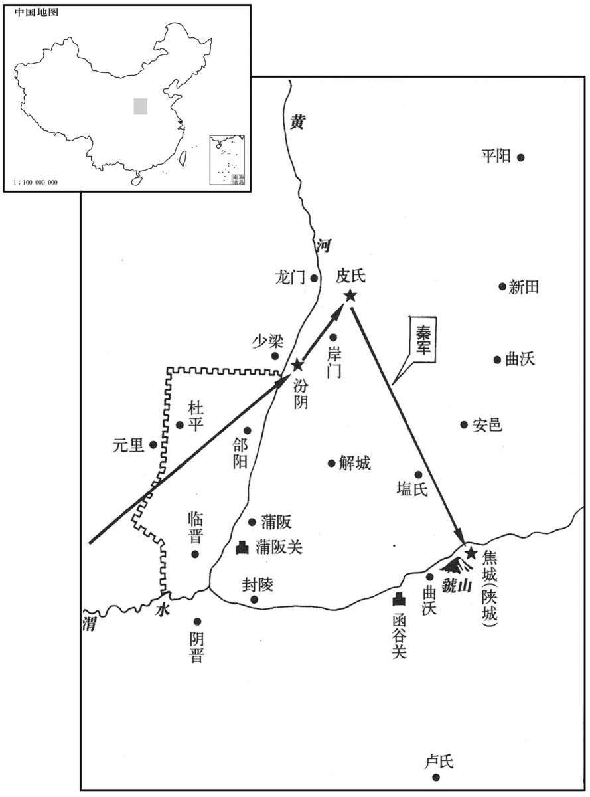

公元前329年资治通鉴：本年记事、原文与白话对照
按原书编年位置阅读；追叙和史论不等于本年发生的事件。白话采用所据译本，缺译不以生成译文补齐。
卷2 · 本年记事
公元前329年 · 显王在位第40年
四十年〔（壬辰、前三二九）〕
本年事件索引（现代整理）

本年形势与背景参考图
原文 · 胡三省注本
秦伐魏，渡河，取汾阴、皮氏，〔班志，汾阴县属河东郡。皮氏县，故耿国，晋献公以封赵夙者也，亦属河东郡。括地志，汾阴故城，在蒲州汾阴县北九里，皮氏故城，在绛州龙门县西百八十步。〕拔焦。
白话 · 所据译本
秦国进攻魏国，渡过黄河，夺取汾阴、皮氏，攻克焦城。
原文 · 胡三省注本
宋公剔成之弟偃袭攻剔成；剔成奔齐，偃自立为君。〔剔，他历翻。〕
白话 · 所据译本
宋国国君宋剔成的弟弟宋偃袭击宋剔成，宋剔成逃往齐国，宋偃自立为国君。